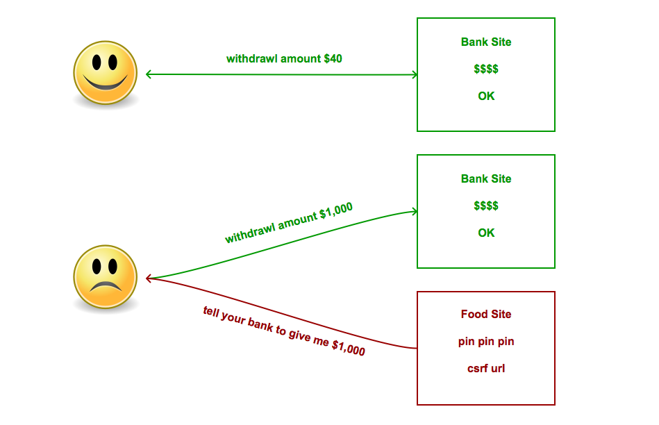
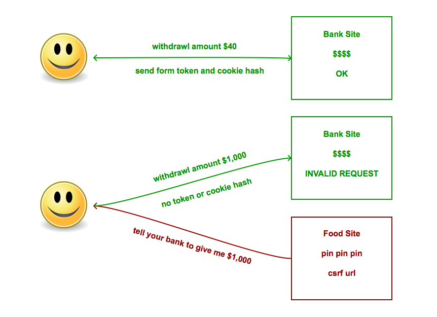
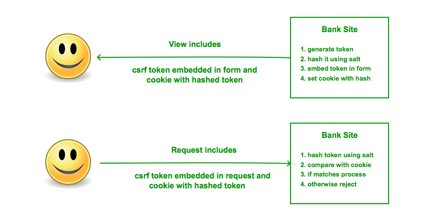

CSRF
Cross Site Request Forgery
Scott Umsted, August 18, 2014
Just tell us what happened!
I think the best way to tell this story is by starting at the end, briefly, then going back to the beginning; then periodically returning to the end, maybe giving different characters' perspectives throughout. Just to, you know, give it a bit of dynamism . Otherwise it's just sort of a linear story.
What is CSRF?
Cross site request forgery is the act of exploiting from a user's browser a trust that the user has with another site.
Take a look at the Open Web Application Security Project OWASP for the list of top 10 risks.
Why is CSRF bad?
Bank Source
unsecure.html
views.py
@app.route('/unsecure', methods=['GET'])
def display_unsecure():
message = request.args.get('message', None)
response = make_response(render_template('unsecure.html',message=message))
return response
@app.route('/withdrawal_unsecure', methods=['GET'])
def withdrawal_unsecure():
amount = request.args.get('amount')
transactions.append(amount)
balance['amount'] -= int(amount)
return redirect('/unsecure?message=$'+amount+' withdrawn')
What can happen?
What just happened?
Food exploited the trust with Bank

Food Source
food site - detail.html
I'm trying to steal your money!
...
 ...
...
bank site - views.py
@app.route('/withdrawal_unsecure', methods=['GET'])
def withdrawal_unsecure():
amount = request.args.get('amount')
transactions.append(amount)
balance['amount'] -= int(amount)
return redirect('/unsecure?message=$'+amount+' withdrawn')
Stop CSRF
Do you feel lucky?
Why does CSRF happen?
- Open session with good site
- No referrer check on good site requests
- No request validation on good site requests
- XSS on good site
How do we stop it?
- CSRF Token
- Prevent XSS, cross site scripting, encode all user supplied data before displaying
- Check referrer
- Use a framework, wtforms, django
Using a token

The details

Form secured
Managing the token
csrfcheck.py
class CsrfCheck:
def __init__(self):
self._salt = str(uuid.uuid4())
print 'salt: %s' % (self._salt)
def generate_token(self):
token = str(uuid.uuid4())
return token, self._encode_token(token)
def valid_token(self, token, hashed):
return True if (hashed == self._encode_token(token)) else False
def _encode_token(self, token):
return hashlib.sha224(token + self._salt).hexdigest()
Display the view
view.py@app.route('/', methods=['GET'])
def display_secure():
cc = CsrfCheck()
token, hashed = cc.generate_token()
message = request.args.get('message', None)
response = make_response(render_template('secure.html',
token=token, message=message))
response.set_cookie('cross_check', hashed)
return response
class CsrfCheck:
def __init__(self):
self._salt = app.config['CSRF_SALT']
def generate_token(self):
token = str(uuid.uuid4())
return token, self._encode_token(token)
def _encode_token(self, token):
return hashlib.sha224(token + self._salt).hexdigest()
Display the view
secure.html
There's also a cookie
Process the form
view.pydef csrf_check(handler):
def decorator():
token = request.args.get('cross_check', '')
cookie = request.cookies.get('cross_check')
result = None
if cross_check.valid_token(token, cookie):
result = handler()
else:
result = render_template('problem.html', problem='Request is not valid')
return result
return decorator@app.route('/withdrawal_secure', methods=['GET'])
@csrf_check
def withdrawal_secure():
amount = request.args.get('amount')
transactions.append(amount)
balance['amount'] -= int(amount)
return redirect('/secure?message=$'+amount+' withdrawn')Let's try again
Go full screen
- Look at secured in chrome
- Manipulate page in dev tools
- Look at python code
Mission Accomplished!
Things we learned
- CSRF is an exploit of a user's trust in another site
- Prevent using csrf token, referrer, prevent xss, frameworks
- Techniques useful for both form submission and ajax calls
- GOTO OWASP